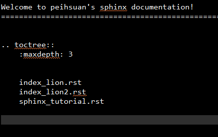

sphinx tutorial documentation¶
Indices and tables¶
安裝與環境設定¶
Learn reStructuredText¶
設定sphinx之後，在source底下會看到index.rst檔，就可以開始撰寫rst文件了
- 官方文件
- See “show source”
toctree¶
Toctree只能include別的rst檔 同一個頁面要reference到標題,需要使用reference label
內部連結、外部連結¶
- 外部連結
- 內部連結方法ㄧ : 直接使用標題名稱
`輸出檔案`_
- 內部連結方法二 : 使用自定義Label
.. _innerLink: # 在需要被連結到的地方自定義label
:ref:`innerLink` # 在需要連結到label的地方置放連結ref
- 如果要在文件最上方自動建立索引:
.. contents:: a title for the contents
:depth: 2
code block¶
可highlight,可指定語言,使用linenumber…等等
- 使用雙冒號”::”開頭
- 如果要指定語言,用.. code-block:: python
1 2 3 | # here is the code
# this is the emphasize-line
print('hello world')
|
使用``符號: ``$here is the code``
$here is the code
註解¶
.. this is a comments
輸出檔案¶
- 輸出html檔案
$make html
- 輸出pdf檔案
- 用 wkhtmltopdf 工具,將html轉成pdf
疑難排解¶
- 檔案link失敗
- 解決: 把檔案copy到local再打開
- 編譯時出現warning
- 解決: 九成是排版問題
- 例如 *abc -> * abc
- code block:: 下面沒有空一行
#warning
/home/peihsuan/sphinx_20171123/source/sphinx_tutorial.rst:105:
WARNING: Inline emphasis start-string without end-string.